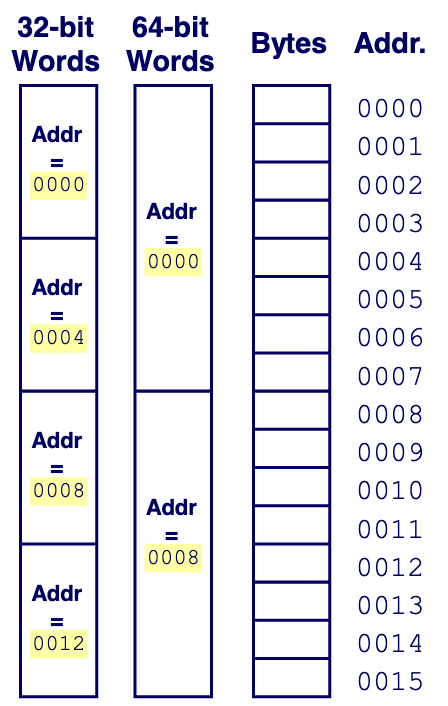
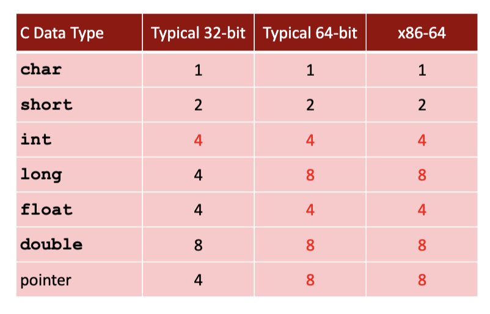
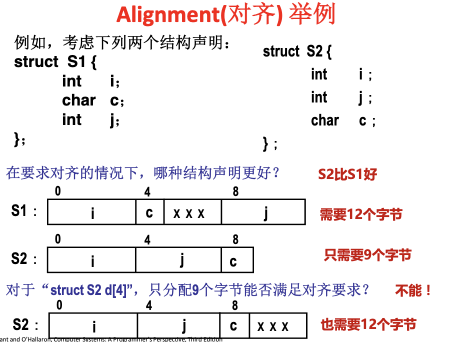
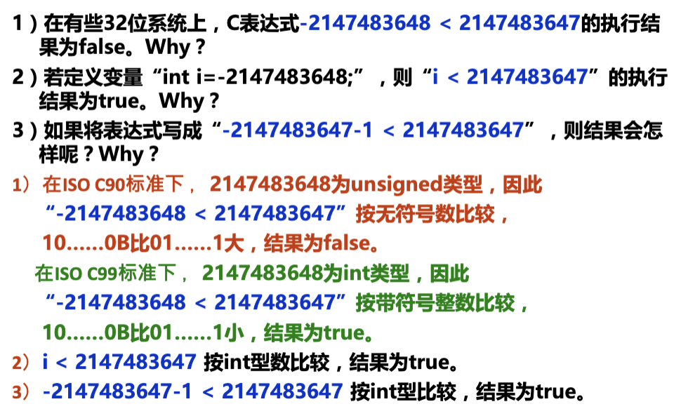
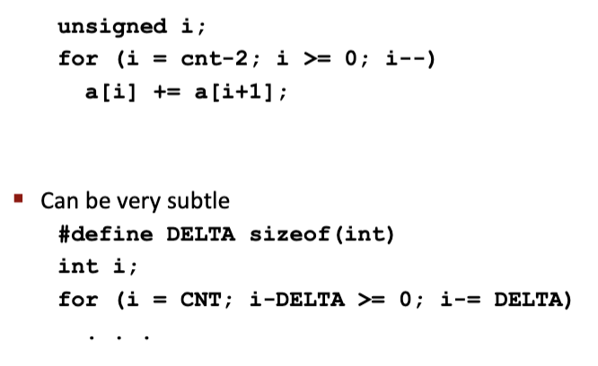
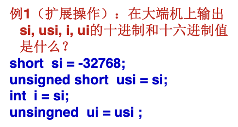
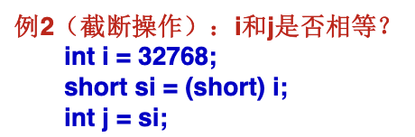

Word Size 字长
- 32位(bits)机器，字长为4Bytes(32/8)，寻址空间为$2^{32} = 4 * 2^{30} = 4GB$；
- 内存中的管理方式如下，32位的机器最小连续字间隔4Byte，64位的机器最小连续字间隔8Byte，字节Byte是最基本存储单元；
数据表示
- int可以跨平台兼容，long和pointer一样：

数据的存储排列
解答：0x08000100；
字的存放问题
- 大端法（高对低，最低有效字节在高低址）；
- 小端法（低对低，最低有效字节在最前（低地址））
- 以
int x = 0x01234567, &x = 0x100为例：
| Address |
0x100 |
0x101 |
0x102 |
0x103 |
| Big Endian |
01 |
23 |
45 |
67 |
| Little Endian |
67 |
45 |
23 |
01 |
#include <stdio.h>
typedef unsigned char *pointer;
void show_bytes(pointer start, size_t len){ // 从数据的指针开始打印数据，即从低地址开始打印
size_t i;
for (i = 0; i < len; i++)
printf("%p\t0x%.2x\n",start+i, start[i]);
printf("\n");
}
int main(void) {
int a = 15213; // 15213 = 00 00 3b 6d;
printf("int a = 15213;\n");
show_bytes((pointer) &a, sizeof(int));
int b = -15213;
printf("int b = -15213;\n");
show_bytes((pointer) &b, sizeof(int));
char s[6] = "18213";
printf("string s = \"18213\"\n");
show_bytes((pointer) &s, sizeof(s));
return 0;
}
- 注意对于字符数组，存储时每个字符按照小端法存储，所以表现出来的结果是整个字符串小端法和大端法没有区别；
字的边界对齐问题
- 按边界对齐：（以32位机器为例，按字节编址，4个字节同时读写）
- 字地址：4的倍数；
- 半字地址：2的倍数；
- 字节地址：任意；
- 浪费了一些空间，但减少了访存次数；

运算
布尔运算
- 按位与，按位取反；
- $\sim 0x41(01000001) \rightarrow 10111110 = 0xBE$；
- $\sim 0x00\rightarrow 0xFF$；
- $0x69 \& 0x55 \rightarrow 01101001 \& 01010101 = 01000001$
逻辑运算
||, &&, !，注意与布尔运算区别，运算的结果只有0或1（运算结果只要不为0false，就是1true）；
移位运算
无符号数和有符号数的位级表示
| 关系表达式 |
运算类型 |
结果 |
说明 |
| $0 == 0U$ |
unsigned |
True |
|
| $-1 < 0$ |
signed |
True |
|
| $-1 < 0U$ |
unsigned |
False |
$-1 = 1\cdots 1_2 = U_{max} > 0$ |
| $2147483647(2^{31} - 1) > -2147483637 - 1$ |
signed |
True |
|
| $2147483647U > -2147483637 - 1$ |
unsigned |
False |
$-2147483637 - 1 = T_{min} \rightarrow 1\cdots 0U = 2^{31} > 2^{31} - 1$ |
| $2147483647 > (int)2147483648U$ |
signed |
True |
$(int)2147483648U = 1\cdots 0 = -2^{31}$ |
| $-1 > -2$ |
signed |
True |
|
| $(unsigned)-1 > -2$ |
unsigned |
True |
$(unsigned)-1 = U_{max}$ |
- 数据类型只决定读取方式，不改变存储方式(01串)；
- 一些另外的注意点：
sizeof()返回的类型为unsigned int，所以以下代码会导致死循环：
位扩展和位截断
Sign Extension
Sign Truncation
- 无符号数截断$B2U_k(x_{k-1}\cdots x_0) = B2U_w(x_{w-1}\cdots x_k x_{k-1}\cdots x_0) \% 2^k$
- 有符号数截断$B2T_k(x_{k-1}\cdots x_0) = U2T_w(B2U_w(x_{w-1}\cdots x_k x_{k-1}\cdots x_0)\%2^k)$，即先截断，再重新解释；
- 例子：

解答：short si = 0x 80 00 = -32768;
unsigned short usi = 0x 80 00 = 32768;
int i = 0x FF FF 80 00 = -32768;
unsigned ui = 0x 00 00 80 00 = 32768;

解答：int i = 0x 00 00 80 00 = 32768;
short si = (short)i = 0x 80 00 = -32768;
int j = si = 0x FF FF 80 00 = -32768;